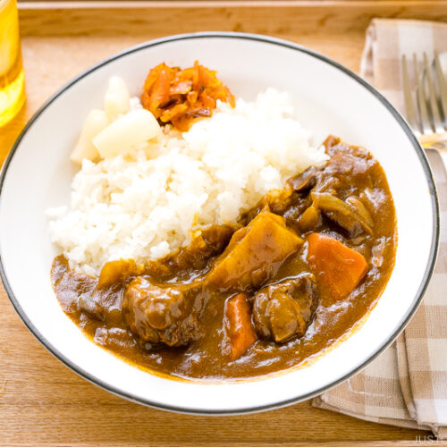

Japanese Beef Curry

This dish is best served with rice and packs a massive punch of flavor! To create this
amazing dish, you will need several ingredients. Take a look at the image and see what
you'll need! Just kidding, this is what you'll need:
- 5 Potatoes
- 5 Carrots
- 6 lbs of beef
- Curry sauce
- Cut up all the vegetables and meat
- Throw all of that into a pot at max heat
- Let it cook for 20 minutes and stir in curry sauce
Return to Main Page